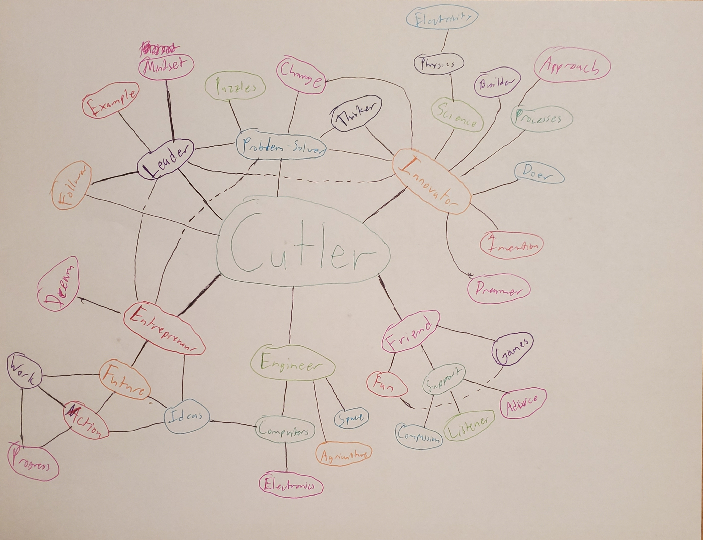

Leadership, Entrepreneurship, and Innovation
My future as a Leader, Innovator, and Entrereneur
Introduction
My name is Cutler Thayer, and I am currently a student at Iowa State University studying computer engineering. I have a
passion for building things, playing games, and learning about random stuff.
The purpose of this site was to put my journal entries for the class Leadership, Entrepreneurship, and Innovation.
However, this page is to serve as a reflection of myself as a leader, innovator, and entrepreneur. In the process of
reflecting I also plan on going in depth as a leader, innovator, and entrepreneur.
Throughout the duration of this class and through other experiences I am aware that what I reflect and think now will
probably change in the future. However, this reflection is to serve as a snapshot at this point in time. This reflection
was also done as pieces constantly coming back to it once I was able to reflect and put it into words.
Reflection Web

One of the first steps I took during this reflection was to draw what I call a “reflection web”. I often draw these to reflect
upon different things, brainstorm, or just think through something. My process when drawing this was put something in the center,
in this case myself, and put keywords connecting to the center. Then it branches out until I either run out of room or cannot reflect
anymore.
For this particular web each word represents something I think I am or aspire to be. Each subword either represents something that is
an example of how I am that, or what I believe these things are. This particular web tool me about half an hour to complete due to the
amount of time I took to reflect upon everything.
Initially I had come up with five things surrounding my name Leader, Innovator, Entrepreneur, Engineer, and Friend. Then I just began
reflecting around each thing bouncing between them as I felt like it. After more reflection on a lot of this, I also believe I am a
problem solver and connected myself to that. In addition to me being a leader I also thought of myself as a follower. This is because
I believe it is important to sometimes not be a leader in certain situations. Knowing when to step in and out is important.
Some key takeaways I learned from doing this were that I believe I can do many things as long as I take action. For example, I am not
an entrepreneur, but I believe I can be one through enough action and hard work. Hopefully one day I do. I also like to approach things
with kindness and compassion. I believe I am or can be a friend to all. I always listen and will be there as support if I need to be.
I know I do not talk that much, but I always try to be a fun and lighthearted person when I do. I also believe that there are many ways
to make change regardless of whether it is big or small. Being an engineering student making change physically is something that is very
common. However, making a bigger impact is also something that I believe is possible even if it is difficult.
Myself as a Leader
Throughout this past year I have gained a new understanding of leadership. Originally I was of the belief that leaders were confident
individuals who could speak up. However, over time I have begun to realize that leaders do not need to be loud and taking charge. There
are many different ways to lead and I believe there are many good leaders.
I believe that I have been a leader in the past, and I have continued to grow to be a better leader overall. One of the many ways I do
this is through leading by example. I do what I would expect others to do, and I would guide others if they are struggling. I am also
willing to provide support to others when necessary. This can be through being someone to listen and provide advice where I can. I also
like to solve problems. I will take any challenge that comes my way and I will do my best to solve it.
There have been many times when I was younger to take the lead. Many times when I was in boy scouts or school clubs. However, over time
my engagement as a leader has begun to dwindle. Through taking this course I have now realized that I have still been a leader just not
as directly as I thought. I am also open to change and improving as a leader.
Some ways that I could improve as a leader is through being more vocal. Making my opinions known to others will allow me to connect with
my followers and help them understand my beliefs. I can also try to be more social. This would be a bit of a struggle for me, but this
would allow me to form a better connection with my followers by understanding them more. I also need to be aware of when to step forward
as a leader. I usually know when it is appropriate to step back and let others take the lead, but taking the initiative to step forward
is one thing that I can improve upon. All of these things come from a lack of confidence on my end. I have been taking steps to try and
improve my confidence by going to social events, joining clubs, and meeting new people. After some time I hope to gain the confidence I
need to become a better leader even though it is unnecessary.
Myself as an Innovator

I consider myself to be an innovator. I like to create, make, build, and imagine things. I have also grown to see the amazing possibilities
that there could be in the world. I also see that there are many problems in the world that need to be solved. Some of these problems are
simple to fix, but others are more difficult and need leaders and innovators to work together to solve them. Building a mindset that anything
can be innovated is in my opinion what makes a great innovator. Figuring out how to make those changes are just smaller steps after that.
I put this into practice through trying to solve smaller problems of my own. I have a passion for computers, so I like to solve computer
problems. However, there are bigger problems like climate change that I am also passionate about. Taking time to think about ways to reduce
my carbon footprint is one small way I can help the planet. In my free time I like to be creative and make small things. One example of this
is through my hobby of 3D printing. The dinosaur on the left is something that I have printed and painted in the past to be creative in my
free time. Overall, I believe that there are many ways that I have been an innovator, and I will continue to be one.
Myself as an Entrepreneur
I do not consider myself to be an entrepreneur. However, I do aspire to be one day. Hopefully by owning a successful business or succeeding
in some venture. This will require a lot of effort from me in order to make that a success. Making friends and networking is one way I can
continue to improve my success as a potential entrepreneur. There are also many different avenues to explore that it would be difficult to
know how to start.
For me I think the best way to become an entrepreneur is through both being a leader and an innovator. If I can be a good leader then I will
be able to guide others through my vision and make things more successful. Through being an innovator I can come up with clever ideas that
will make improvements to the world. If I can be both of these things as well as learn new skills along the way I think I can become a successful
entrepreneur.
Takeaways
Through this class, the journal reflections, and other experiences in college I have learned that I aspire to be many different things. I
have learned a lot about how to be a better leader. Knowing when to step up and be a leader versus when it is appropriate to step back and
not take the lead. I have also learned about how leaders must be able to adapt to change. They must be open to it and realize that just
because there is one way to do something does not mean that it is the only way.
I have also learned more about how to be a better innovator. Realizing there are more things to innovate than just the stuff that people
have in this world. We can change the way that things are done and the way people behave through innovation. When people have an open mind
and are thinking about all of the possibilities many wonderful innovations are possible.
Learning about entrepreneurship through this class has also been interesting to me. This class has given me advice on how I should lead
others helping me through my venture. Combining the traits of a leader and an innovator can also help me become a great entrepreneur. There
are many possibilities as long as I am willing to put in the effort.
Overall, this class has been an amazing experience. I have learned a lot about how to be a better leader. I have also learned about how
leadership dynamics have changed and will probably continue to change. I now know how to innovate as a leader and hopefully make a meaningful
impact as a leader. I have learned a lot and I hope to continue to learn and grow as I continue throughout college and my career.